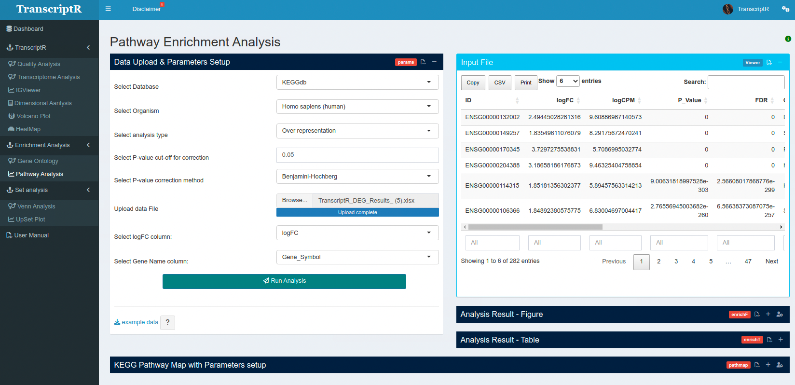
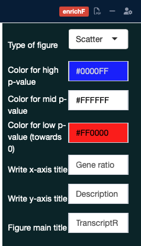
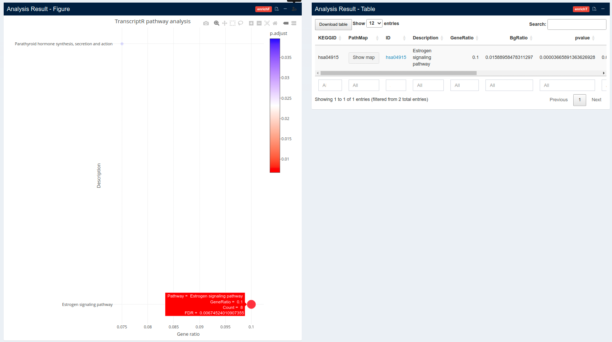
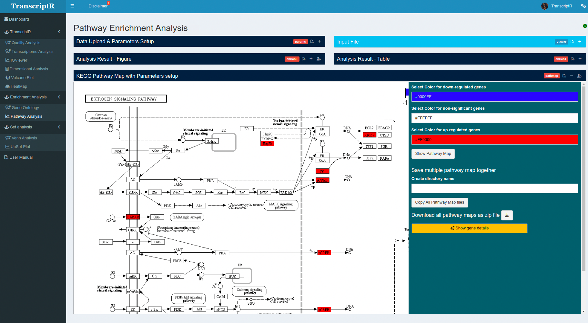
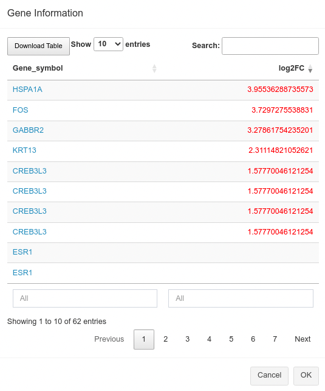

8 Pathway enrichment analysis
Pathway enrichment analysis helps the user to get the mechanistic insights of the important genes from genome-wide data analysis. In TranscriptR, we introduced the pathway analysis module that can compute the enriched pathways from three different databases, KEGG (Kanehisa and Goto 2000), Reactome (Gillespie et al. 2021) and Wikipathways (Pico 2008; Martens et al. 2020).
8.1 How to use
8.1.1 Data upload & Parameters setup
Select Database User needs to select the database from the drop-down list (KEGG, Reactome, Wikipathways) for the analysis. Default is KEGG database
Select Organism In the next step, please select the organism from the drop-down list. The default sets to ‘Homo sapiens (Human)’.
Please note that for the three different databases (KEGG, Reactome and Wikipathways), we have different sets of organisms. In KEGG, the list is added from KEGG databases (only mammals), other databases are showing organisms based on the availability in bioconductor.
Select analysis type Choose the type of pathway enrichment analysis from the drop-down list, Over-representation or GeneSet Enrichment Analysis (GSEA). The default is over-representation.
Select P-value cut-off for correction The default value for p-value correction is set to 0.05. User can set their own cut-off values.
Select P-value correction method The default method for adjustment of P-value is the Benjamini-Hochberg (BH) correction method. User can choose different method using the drop-down list:
- Benjamini-Hochberg (BH)
- Benjamini-Yeketuli (BY)
- Bonferroni
- Holm
- Hommel
- Hochberg
- FDR
- none
Upload data file User can upload/drag-and-drop the direct output result from the main analysis. The supported file formats are, excel (.xls, .xlsx), comma-separated (.csv) or tab-delimited (.txt). The uploaded file should have the header/column name.
Select logFC/Gene name column After the file upload, user needs to select the logFC and gene name (gene symbol) column (column name can be anything).
Viewer panel and Run Analysis Please check your upload file in the viewer panel and select the right columns for logFC and gene name/symbol.

8.1.2 Analysis Result
In the Analysis Result, there are two parts,
- Figure
- Table
The Figure and Table is interactive.
Figure parameters We added few parameters in the Figure (see Figure 8.2) -
Types of figure: User can choose between 1) Scatter plot/dot plot and 2) bar plot. The default is dot plot.
Color for high/mid/low p-value: Colors for high (default is blue), mid (dafault is white), low (default is red) can be changed.
Titles: User can write the title and x-/y-axis labels of the figure.

Table The table will display all results by pages. The user can download the whole result table as an Excel file. If the user want to select one/few enriched pathways (as dot on the plot), the table will be updated interactively with the selected list (see Figure 8.3).

In the table, we added following information -
- KEGGID
- PathMap: only available to KEGG database analysis result.
- ID
- Description
- GeneRatio
- BgRatio
- pvalue
- p.adjust
- qval
- geneID
- Count
KEGG Pathway Map with Parameters setup
This feature only available to KEGG pathways.
If the user selected ‘KEGG database’ for the analysis, then the result table will contain a column named PathMap which displays ‘show map’ option against each enriched pathway. Once clicked on the ‘show map’ will trigger the result, KEGG pathway map with parameters setup (see Figure 8.3).

In this map, user can choose their own colors for up, down or non-significant genes in the pathway map (see Figure 8.4).
PLEASE NOTE, if there is no map showed in the viewer panel, run Show Pathway Map (see Figure 8.4).
If the user wants multiple pathway map, they can choose to save in one folder and downloda all together. They can write their own folder name and download as zip (see Figure 8.4).
Again, we added an option to see the ‘gene details’ as this was not shown on the previous table (see Figure 8.5).

Pathway enrichment plot: after “Run Analysis”, the plot will be generated as soon as computation has been done. Depends on the size of data, it might take few minutes (See Appendix D). The plot is interactive and with the mouse hovering, each dot/bar will show the pathway name, count of genes from the input list for that particular pathway, the corrected p-value and gene ratio. The color scale bar shows in the legend. User can download the figure as PNG as described above and the interactive figure as a html file. The downloaded HTML file is clickable and each pathway enrichment term can open the respective database for pathway details.
All dots (pathway enrichment terms) are clickable and will open a new tab with the respective pathway detail from the selected database (Reactome/KEGG/Wiki).
In the pathway enrichment table, the pathway ID is clickable and will open the respective pathway from the database. However, this feature is only avaible on the browser, if the user download the table, there is no such link to check the pathway source.
8.2 R packages used
TO ALL OUR USERS, IF YOU ARE EXPERIENCING ANY TROUBLE WITH THE APP, BEFORE SENDING THE BUG REPORT, PLEASE RESTART THE DOCKER CONTAINER AND TRY AGAIN.↩︎
Copyright © 2023-2024. Massimiliano Volpe and Jyotirmoy Das.